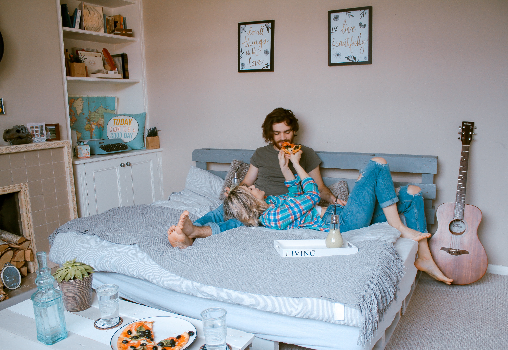

About US
Furniture and inspiration for a better everyday life at home
At Ind-Furnitures Corp. you will find well-designed furniture and home furnishings that are functional and affordable. We have everything from Kitchens and smart home solutions to a large selection of bedroom furniture, sofas, lighting, curtains, bedding and more. Our furniture stores are the perfect place for you to find inspiration and get tons of decoration ideas that will help you live in a much more comfortable and sustainable way. Discover our wide range of products in store or online!
We make people Smile :)

The company is known for its modernist designs for various types of appliances and furniture, and its interior design work is often associated with an eco-friendly simplicity.[19] In addition, the firm is known for its attention to cost control, operational details, and continuous product development that allowed Ind-Furnitures Corp. to lower its prices by an average of two to three percent. Most stores follow the layout of having the showroom upstairs with the marketplace and self-service warehouse downstairs. Some stores are single level, while others have separate warehouses to allow more stock to be kept on-site. Single-level stores are found predominantly in areas where the cost of land would be less than the cost of building a 2-level store. Some stores have dual-level warehouses with machine-controlled silos to allow large quantities of stock to be accessed throughout the selling day.